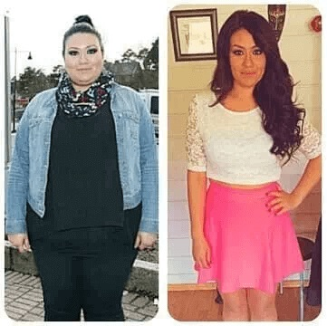

CAMBIARE LA VITA: una studentessa di medicina italiana ha inventato un rimedio unico che ti aiuterà a perdere 25 chili in 28 giorni

Questa è Sara Marinelli, la migliore studentessa di medicina dell'Università di Roma.
In 28 giorni è riuscita a perdere 25 kg! Non serve alcuna dieta o esercizio fisico.
La sua specializzazione medica è la tecnologia alimentare. Durante gli esperimenti con la sua tesi di dottorato, si è imbattuta in un nuovo metodo per bloccare il grasso di cui nessuno aveva sentito parlare prima.
Per assicurarsi che non fosse una coincidenza, ha chiesto a sua zia Antonia Speranza di provarlo:
Antonia Speranza ha perso 15 kg in un mese.
Anche la vicina di Sara, Michela Quaranta, della sua città natale ha provato questo nuovo metodo per bloccare il grasso:

Michela e ha perso 34 kg in 2 mesi.
E uno dei partecipanti alla ricerca, Raffaele, ha visto risultati eccezionali:

Raffaele ha perso più di 59 kg in meno di 3 mesi grazie al metodo di Sara Marinelli.
Anche i professori e gli insegnanti di Sara sono rimasti scioccati dal suo nuovo metodo.
Ha dichiarato sul palco di fronte alla comunità scientifica:
"Chiunque può ottenere risultati simili. Se state lottando con il sovrappeso... ANCHE VOI POTETE perdere 25 kg in 28 giorni. Senza dieta ed esercizio fisico. Grazie a questo prodotto unico."
I suoi professori e i loro coleggi erano scioccati. Sembrava tutto falso per loro
Ma Sara ha dimostrato che si sbagliavano
Parliamo in dettaglio del prodotto inventato da Sara
Come Sara ha fatto questa scoperta
Sara ha scoperto questa rivoluzionaria soluzione per la perdita di peso durante il suo 2° anno di studi nella Scuola di Medicina di Roma
A causa del duro studio, non aveva tempo per una dieta sana, quindi nel suo primo anno di studio ha guadagnato più di 25 kg. Da futura nutrizionista, si vergognava, ma non aveva abbastanza tempo per fare sport.

A causa del peso in eccesso, tutto andava male anche nella vita personale...
Un giorno era alla ricerca di materiali per i suoi studi nel reparto dei libri rari nella biblioteca universitaria. Si è imbattuta in un vecchio libro che descriveva uno studio interessante ma già dimenticato "Metodo di blocco del grasso. Esperimento 35/10".
Guardandosi allo specchio, Sara sapeva che doveva fare qualcosa al riguardo.
Nuovo metodo per bloccare il grasso
Aveva bisogno di usare questo nuovo metodo per bloccare il grasso.
Inizialmente, ha cercato di creare il giusto rimedio con mezzi improvvisati, mescolando sali , alcali (note: soda) e acidi, come aceto e acido citrico. Ma sfortunatamente a casa, il risultato non era come previsto, e senza attrezzature speciali era difficile e molto costoso.

Ma si stava muovendo nella giusta direzione e questo modo doveva essere sviluppato
Per fortuna ha avuto accesso al laboratorio di nutrizione di medicina dell'Università di Roma, che le ha permesso di sperimentare questo metodo.
Il metodo per bloccare il grasso era abbastanza semplice, quindi il laboratorio aveva tutti gli ingredienti necessari.
Dopo mesi di tentativi ed errori...
...Sara è riuscita a mettere insieme la perfetta combinazione di ingredienti.
Ma era necessario provare quel metodo per bloccare il grasso.
Sara ha testato tutte le ricerche su sé stessa. E in 7 giorni ha perso 8 kg.

Poi, dopo 14 giorni, ha perso altri 7 kg.
Dopo 21 giorni, ha perso ancora 5 kg.

E infine, dopo 28 giorni, Sara ha perso altri 4 kg ancora.
In soli 28 giorni, si è sbarazzata di 25 kg!
Qual è l'essenza di questo metodo per bloccare il grasso?
Nel nostro corpo ci sono ormoni speciali - leptine, sono loro che regolano il senso della fame e depongono le cellule adipose.
Sfortunatamente, la maggior parte della gente di oggi ha dei disturbi ormonali e gli ormoni non funzionano come si deve. Il che porta non solo ad un aumento dell'appetite, ma anche a un metabolismo rallentato. Con conseguente aumento di peso ingiustificato
Il mio metodo riporta il lavoro delle leptine alla norma, attiva i segnali che accelerano il metabolismo. Il tuo cervello riceve segnali che sei pieno e che il corpo deve bruciare il grasso in eccesso.
Gli studi che ho trovato nel libro descrivono i primi esperimenti degli anni ' 80. Un paziente che ha seguito il nuovo metodo di blocco del grasso è stato in grado di perdere 35 kg in 10 giorni.
Ma la comunità scientifica di quel tempo era spaventata, non erano preparati per tali risultati.
Temendo la responsabilità, l'esperimento fu coperto e presto dimenticato.
Ma ora, anche tu puoi bloccare l'aumento di grasso e perdere tanto peso in un mese.
...Cosa si può fare, se avete un metabolismo rallentato o avete lottato con l'aumento di peso per tutta la vita?
Non preoccupatevi.
Anche se avete un metabolismo rallentato. Anche se avete cercato di perdere peso per tutta la vita. O anche se volete solo perdere grasso prima di matrimonio o un evento imminente.
Questo nuovo metodo per bloccare il grasso potrà farcela facilmente.
Esaminiamo, ad esempio, il caso di 62enne Fabiano Masini.
Per tutta la vita ha lottato con un aumento di peso irragionevole. Ma dopo aver provato il nostro metodo puo mangiare quasi tutto ciò che vuole.
E allo stesso tempo rimane in forma!
Guardate come Fabiano Masini è passato da 102 a 82 kg in un mese:

Poi anche Celia Chiesa, 58 anni, che voleva perdere peso prima del matrimonio di sua figlia.
In sole 5 settimane, è stata in grado di perdere 28 kg. Sembrava semplicemente fantastica nelle foto del matrimonio di sua figlia.
E poi c'è il 49enne Simone Carpa, che ha iniziato ad aumentare di peso dopo i 30 anni
Non ci crederete! Ma dopo aver seguito il nostro metodo di blocco del grasso, è stato in grado di indossare i vecchi vestiti da 20 anni fa..

Immaginate di poter provare un completo o un vestito che non è stato indossato per anni. E come ci si sente ad apparire magri e belli nelle foto.
Un nuovo metodo per bloccare il grasso può dare vita a tutti i vostri sogni del corpo snello.
Problemi di peso - non è colpa vostra
Sara si è sempre chiesta perché il suo professore insista su farmaci potenzialmente pericolosi e costosi.
Mentre approfondiva le sue ricerche, scoprì notizie scioccanti.
La mafia farmaceutica e i nutrizionisti di tutto il mondo nascondono esistenza dei migliori prodotti in tutti i modi possibili, perché è più redditizio vendere un sollievo temporaneo e non una cura completa!
Ma ora...
Questa è l'ultima soluzione dietetica di cui avete bisogno
Non vi serviranno più altri integratori per la perdita di peso, né la dieta né un programma di allenamento.
Perché?
Quando Sara ha scoperto questo nuovo metodo per bloccare il grasso, ha dovuto sviluppare un modo per consentire alle persone di usarlo.
La sua ricerca l'ha portata alla scoperta di un rimedio segreto.
Questo rimedio rende il nuovo metodo per bloccare i grassi accessibile a tutti.
E può aiutarvi a perdere 25 kg in 28 giorni!
% dei pazienti che hanno perso peso
- - Persone che seguono una dieta tradizionale
- - Test segreti del nuovo metodo di blocco del grasso
| 13% |
| 97% |
Non otterrete solo risultati a breve termine.
E se siete interessati...
...Non troverete questo rimedio nei negozi, dal momento che Sara ha appena finito di sviluppare questa formula. Ecco perché il vostro specialista probabilmente non ha mai menzionato questo prodotto prima..
D'ora in poi, sarete sempre snelli.
Sara e il suo team hanno appena creato i primi lotti di questo prodotto.
Ma fareste meglio a sbrigarvi, perché questo nuovo lotto sta per finire RAPIDAMENTE:
Immaginate di poter ottenere quel prodotto prima che finisca il lotto attuale?
Potreste mettere quei jeans che non avete indossato per anni.
Potete mangiare di nuovo quello che volete...
...E non preoccuparvi del peso.
E sarete più felici, più magri!
Ma perché Sara vuole produrre questo prodotto?
Sara vuole che gli altri abbiano lo stesso successo
Vuole solo aiutare le persone a perdere peso come ha fatto lei. Questo è lo scopo della sua vita come un futuro specialista nel campo di nutrizione.
Aveva bisogno di inventare qualcosa che funzionasse per il resto della sua vita.
Presto vedrete anche voi i risultati della perdita di peso. Non l'avete mai visto prima.
Non c'è bisogno di limitare il cibo. Mangiate quanto volete.
Senza esercizi.
Provate a immaginare di guardarsi allo specchio e vedersi snelli.
Cos'è questo rimedio?
E dà al corpo la spinta necessaria per inviare segnali al cervello di un nuovo codice per bloccare il grasso.
Ricorda al corpo della sensazione di sazietà e soddisfazione di ciò che è stato mangiato.
Previene l'accumulo di grasso.
non solo blocca il grasso, ma porta il vostro corpo nello stato di chetosi.
Questo trasforma il vostro corpo in una macchina brucia grassi.
...E qual è la cosa migliore?
Per ottenere questi risultati triplicati, non è necessario seguire una dieta o fare sport.
Guardate questo paragone tra due categorie dei pazienti.
Sara ha invitato una donna a seguire la tradizionale dieta chetogenica per un mese e un'altra donna ad usare il .
La donna che ha praticato la tradizionale dieta chetogenica ha perso circa 6 kg:
Tuttavia, la donna che ha usato non ha seguito né la dieta né l'esercizio fisico...
...E ha perso 26 kg in un mese:
Uno dei professori di Roma che ha dato sostegno alle ricerche di Sara, ha detto:
"Questo scoperto da Sara è rivoluzionario. Ed è facile da usare. E garantisce i risultati di perdita di peso più veloci senza alcuna dieta o un piano di esercizi complicato. Non ci sono effetti collaterali. Lo raccomando vivamente."
Dite addio agli esercizi estenuanti... e diete rigorose...
...Diamo il benvenuto alla perdita di peso più delicata e più facile.
Forse vi chiedete come funziona.
È semplice!
Perché...
Questo è il metodo più semplice per perdere peso
Perché è il modo più semplice per perdere peso?
Semplicemente prendete 1 capsula di tre volte al giorno. E potrete perdere 25 kg in 28 giorni!
Non c'è bisogno di stare a dieta o fare esercizio fisico!
Senza contare le calorie e stare a dieta.
Nessun allenamento estenuante.
Non ci credete?
Guarda come Katia Conti ha perso 25 kg in 27 giorni:
Ha detto: "Sono rimasta scioccata. Quando partecipavo all'esperimento di Sara, il suo team mi ha consigliato di non stare affatto a dieta e non fare sport. Bastava prendere questo rimedio tre volte al giorno. Non è mai stato così facile perdere 25 kg in meno di un mese."
Ed ecco i risultati di Aloisio dopo 29 giorni:

Ha detto: "Odio il cardio o qualsiasi altro esercizio. E non riesco a stare a dieta... Sara ha consigliato di seguire le semplici istruzioni per l'assunzione del prodotto. 29 giorni dopo sono diventato più magro di 30 kg. Ogni fine settimana bevevo birra e mangiavo la pizza. Grazie, Sara!"
Immaginate di poter godere dei piatti preferiti. E non fare sport...
...per raggiungere il corpo dei sogni.
Potrete sentirvi sicuri indossando il costume da bagno.
Per raggiungere il fisico migliore della vita.
Quindi perdere peso velocemente è una bella cosa
C'è il rischio di ingrassare di nuovo?
No, non c'è alcun rischio di prendere peso di nuovo.
Lisa ha seguito una dieta per tutta la vita. E ha usato tutti i tipi di diete e manie alimentari.
Ma non c'era nulla che poteva mantenere il suo peso.
Tuttavia, dopo che aveva preso parte ai test di Sara, Lisa ha perso 23 kg in 26 giorni:

E dopo 6 mesi.
Lisa riusciva ancora a mantenere il suo corpo snello e in forma.
Nicolina, un'altra partecipante alle sperimentazioni di Sara, ha scritto il feedback 6 mesi dopo il dimagrimento:
"Dopo aver perso 18 kg in 30 giorni, non ho cambiato nulla per 6 mesi. E indovinate un po'? Ho lo stesso aspetto, lo stesso peso e mi sento alla grande!"
Ecco una foto dei progressi di Nicolina:
Probabilmente vi stiate chiedendo...
è sicuro?
è molto sicuro in quanto è un prodotto naturale ben studiato che Sara ha scoperto nei suoi studi.
Nessun effetto collaterale!
Il 72% delle persone che hanno usato bruciatori di grasso tradizionali ha avuto effetti collaterali, mentre nessuno di chi ha usato li ha riscontrati.
Ecco cosa hanno detto alcuni di questi partecipanti:
"Ero scettico riguardo a ... perché i bruciatori di grasso tradizionali mi hanno sempre fatto innervosire. Ma il mio corpo ha accettato bene questo rimedio e sono stata in grado di perdere più di 25 kg in un mese."
- Rosa di Roma
" mi ha aiutato a perdere 30 kg e non ho avuto effetti collaterali."
- Bernardo di Bologna
Quindi, anche se avete dubbi su questo , non dovete preoccuparvi.
Provate a immaginare quanto peso potrete perdere senza alcun sforzo.
Va bene... allora la domanda principale...
Come ottenere ?
Beh, oggi è il tuo giorno fortunato!
Sara ha finalmente ricevuto l'approvazione dal suo team e dagli investitori per presentare al pubblico..

Ogni confezione di contiene la quantità necessaria di trigliceridi a catena media (MCT).
Il team di Sara ha investito milioni di dollari nella distribuzione di .
Di solito una confezione di capsule dimagranti costa circa 80 .
Ma ... non è quello che pagherete oggi per una confezione di .
Tra un secondo, passeremo al prezzo reale, ma prima...
Cosa dicono le persone su ?
"Ho sentito parlare che le sperimentazione di Sara erano andati bene, ma ho pensato che fosse troppo bello per essere vero. Beh ... 23 giorni dopo ho perso un totale di 30 kg! Che Dio benedica tutti coloro che prendono .
- Alice di Napoli
"Provatelo! Ho perso 15 kg in un mese."
- Fabiana di Padova

"Per tutta la vita ho sofferto del sovrappeso. Né la dieta né l'esercizio fisico hanno mai funzionato. In 25 giorni ho perso più di 25 kg per la prima volta nella mia vita. Semplicemente prendevo questo rimedio tre volte al giorno. È facile. Grazie, Sara!
- Mario di Milano

"Sono rimasto scioccato, quando la mia ragazza mi ha consigliato ... e mi ha anche raccomandato di non allenarmi e non seguire un certo programma di dieta. In 30 giorni sono stato in grado di perdere circa 30 kg. Ed è stato incredibile."
- Monica di Brescia
"Ho perso 28 kg nel primo mese! Pensateci, ho persino smesso di fare sport, quando ho iniziato a usare . Lo raccomando vivamente."
- Nica di La Spezia
Sara ha fatto tutto questo duro lavoro perché le importava
Capisce cosa significa avere problemi di peso.
E ora che ha la formula perfetta per dimagrimento, le piacerebbe che quante più persone possibile provassero .
Comunque, gli investitori di Sara, in realtà, non vogliono che lei lo faccia, ma Sara vuole aiutare la gente a perdere peso...
...Proprio come lei, quando ha perso 25 kg in 28 giorni.
Invece di pagare 80 Euro per una confezione di , Sara ha concluso un accordo a tempo limitato.
Ora organizza un sorteggio, partecipando al quale potrete ottenere uno sconto del 50% su .
Quindi, siete ancora in dubbio...
Che cosa avete da perdere?
Avete 2 opzioni.
Scelta numero uno... Avete deciso che non fa per voi.
Puoi lasciare questa pagina e andare avanti con la tua vita. E rimani nella stessa forma in cui ti trovi ora. Mantieni lo stesso peso. E continui a sognare di una figura snella.
Non c'è niente di sbagliato in questo.
Oppure... scelta numero due... potete prendere sotto controllo la vostra vita e ottenere una confezione di ...
...E perdere 25 kg in 28 giorni.
La scelta spetta solo a voi!
Se siete pronti a perdere peso oggi, fate clic sul pulsante qui sotto e avrete una confezione di con uno sconto del 50%!
(INVIA LA RICHIESTA FINCHÉ L'OFFERTA È ANCORA VALIDA)
Note: Sara e i suoi pazienti hanno usato le capsule per perdere peso.

Aggiornamento del magazzino: QUASI ESAURITO. I campioni sono ancora disponibili:
Elena Pugliese
Questo è un prodotto fantastico! Lo prendo ora. Non voglio più rimandare le vacanze per la decima volta.
Veronica Fonti
Allora, cosa stai aspettando? Ragazze, ordinatelo e iniziate a dimagrire con ! Visto che offrono i campioni con lo sconto, prendetene uno e non ve ne pentirete.
Aurora Cuomo
L'ho già ordinato. Guardate i risultati. Non ho cambiato la mia dieta e non neanche fatto lo sport. Foto prima/Foto dopo
Gemma Conti
Un risultato fantastico!
Silvia Carrara
I cambiamenti più importanti accadono dentro di te. Prima, ti cambi dentro - poi cambia lo stato psico-emotivo e ti senti più felice che mai!
Irma Mauro
D'accordissimo! Dopo che avevo iniziato a usare questo prodotto, mio marito si è interessato di me di nuovo, ora stiamo vivendo la seconda luna di miele, faccio sesso più spesso rispetto a 20 anni fa! La cosa migliore è che il dimagrimento non richiede nessuno sforzo, è facile e comodo!
Sabrina Elia
Ecco le mie foto. Mi sento imbarazzata per l'aspetto che avevo prima! Ho provato anche altri metodi, palestra e diete di alimentazione sana, hanno funzionato ma per poco tempo, e alla fine sono ingrassata ancora di più. Ho sprecato un sacco di soldi, di tempo e di sforzi. Ma grazie a ho perso peso molto rapidamente e molto facilmente. Prima avevo ordinato un campione con lo sconto e dopo il primo giorno di assunzione ho visto che funzionava davvero. Dopo di che ho ordinato il ciclo completo. Consiglio a tutti.

Antonietta Pozzi
Confermo! funziona bene anche sulle aree problematiche, il grasso va via da tutto il corpo. Si capisce dal primo giorno che il prodotto è buono.
Lucia Casali
Ho 53 anni, pensate che possa aiutarmi?
Giuliana Campo
Dovrebbe. Comunque, è il migliore di tutti i prodotti che io abbia mai provato.
Ortensia Bertini
Sono fantastiche! Ho apprezzato il campione scontato. Se per qualche motivo non vi andrà bene, non vi costerà quasi niente. Con me funziona bene. Condivido i risultati.
Eugenio Bernardini
Quanto tempo ci hai messo?
Ortensia Bertini
Circa un mese.
Ornella Marino
Sono molto contenta di aver trovato questo ! La qualità della mia vita è stata notevolmente migliorata. Sono di nuovo una donna felice... grazie!
Daniella Magnani
Pensano che io abbia solo 30 anni, fantastico! Mi vergognavo sempre del mio fisico, ma ora mi vergogno di dire che ho 43 anni!
Pietro Bernasconi
Io e mia moglie abbiamo preso un ciclo completo e abbiamo perso in totale circa 40 kg, senza diete e palestre. Questo prodotto è buono ed è molto conveniente.
Franca Amore
Oggi tutti possono avere un fisico bello e snello, non solo alcuni con i geni buoni e un sacco di tempo libero per allenarsi ogni giorno in palestra.
Graziano Ferrante
Ci sono volute 3 settimane per rimettermi in forma. Ed è stato il dimagrimento più veloce della mia vita.
Camilla Milano
È molto facile, ciò che serve è solo prendere le prodotto.
Cipriano Papa
Ordinate il campione con lo sconto e capirete subito che ne vale la pena - il metodo più affidabile e sicuro!